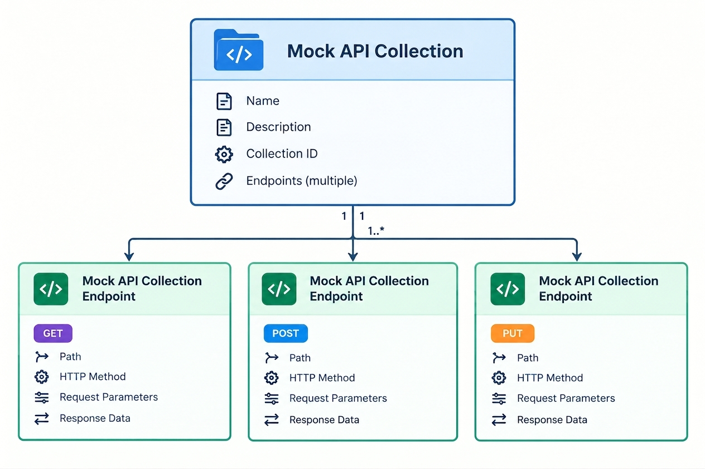

API Mocking on Mocktail Server.
Mocktail Server is a purpose built server for mocking APIs. (static and dynamic web serving are really just ancillary features) It is designed to be simple to set up and use, allowing developers to quickly set up mock APIs for testing and development purposes.
Categories
Intro to API Mocking.
Overview
Mocktail Server is a purpose built server for mocking APIs. (static and dynamic web serving are really just ancillary features) It is designed to be simple to set up and use, allowing developers to quickly set up mock APIs for testing and development purposes. There are broadly two ways to mock APIs on Mocktail Server:- Mocking via Web UI. Mocktail Server provides a simple and intuitive interface that allows users to create and manage mock APIs without writing any code. This is the fastest way to get started with API mocking on Mocktail Server.
- Mocking via Raw JSON. This method allows users to define mock APIs, directly, using JSON files, providing more flexibility and control over the mocking process. This is ideal where there is a requirement to programmatically generate, manage and update mock APIs, perhaps from a parent application.
Structure of a Mock API
Regardless of whether you choose to mock APIs via the Web UI or via Raw JSON, the structure of a Mock API on Mocktail Server is the same. A Mock API consists of two hierarchically nested components:- Mock API Collection. This is the top level component of a Mock API. It defines the overall structure and behavior of the Mock API, including its name, description, unique ID and any endpoints it exposes.
- Mock API Collection Endpoint. This is the second level component of a Mock API. It defines a specific endpoint within the Mock API, including its path, HTTP method, request parameters, and response data. A single Mock API Collection can and often will contain multiple Mock API Collection Endpoints.

In the next section, we'll take a look at how to mock APIs via the Web UI. This is the fastest way to get started with API mocking on Mocktail Server as there is no requirement to write any code aside from the actual (JSON based) mock API response data.